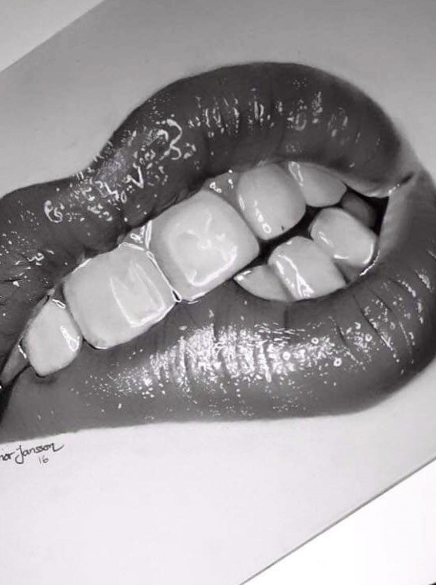
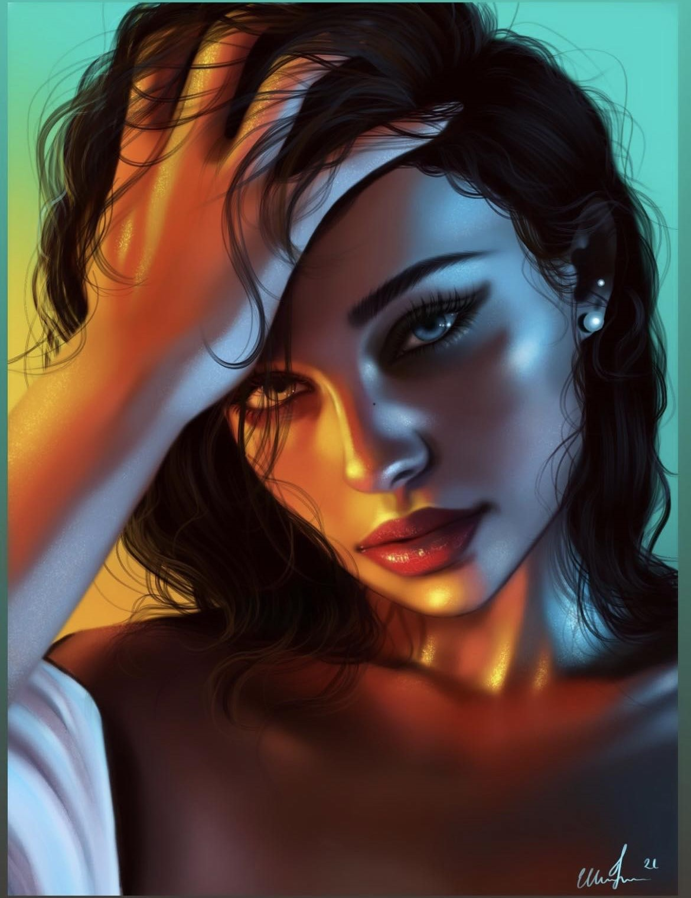
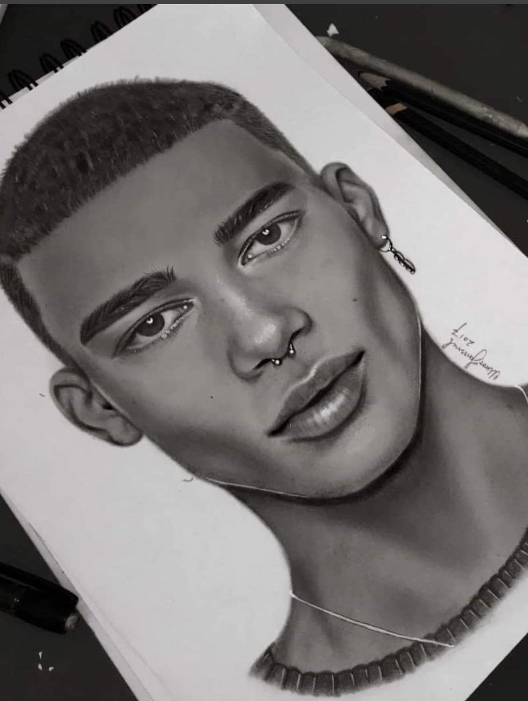
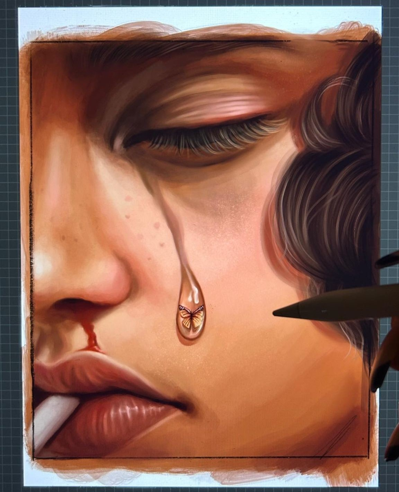
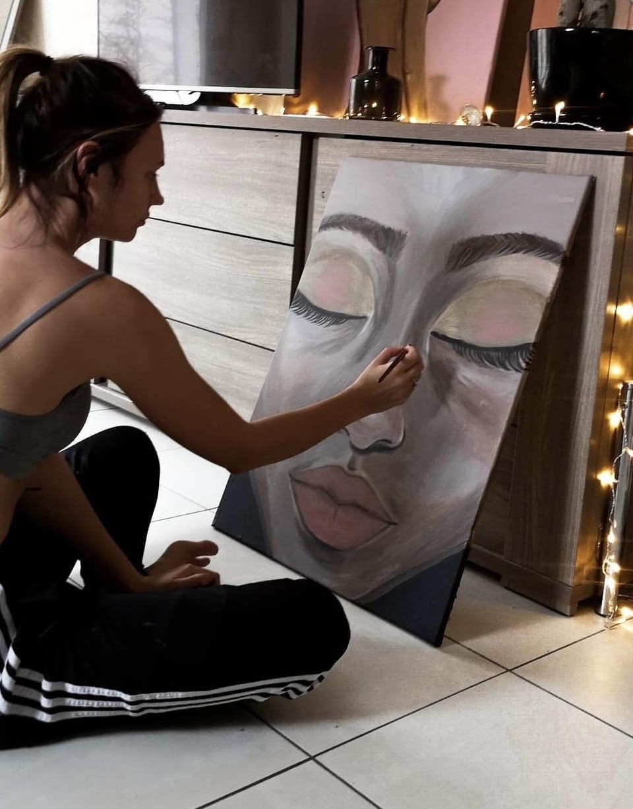
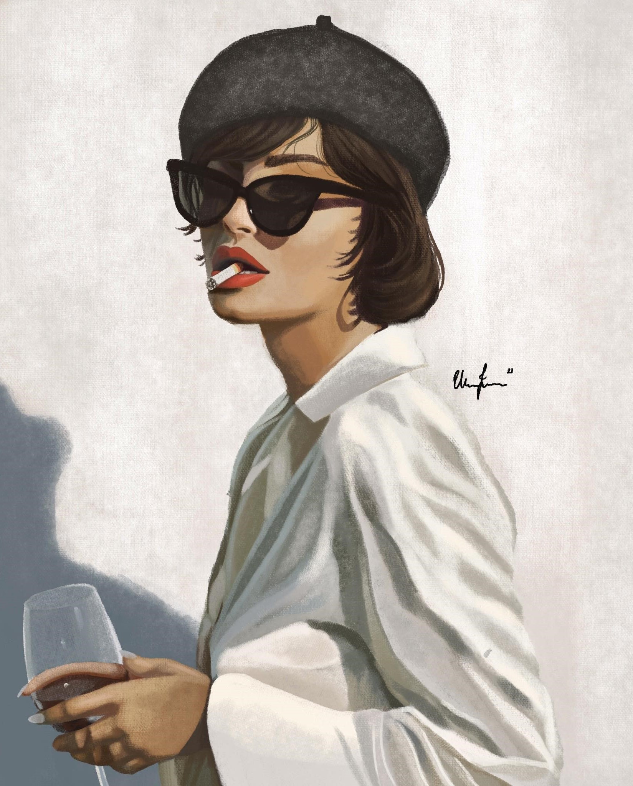
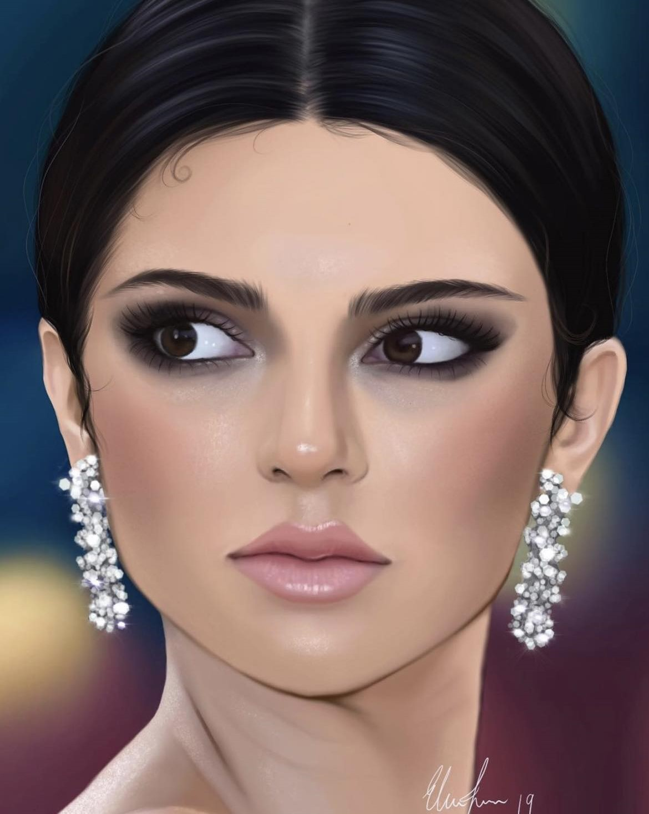

Hej och välkommen!
Jag har nedan skapat en sida med hjälp av html och css för att ni ska kunna
lära känna mig lite bättre. Min storsta hobby är konst och att måla med hjälp av olika metoder.
KORT FAKTA OM MIG
- Jag har målat i över 15 år.
- Realism och abstrakt konst är roligast.
- Jag intresserar mig för kodning.
- Målning är min form av terapi.
- Jag vill jobba estetiskt.
BILD PÅ MIG
LÄS MER
Nedan kan ni se en liten del av min portfolio där jag målat med hjälp av olika metoder så som till exempel akryl, vattenfärg, blyerts men även mycket digitalt. Jag fokuserar mycket på ansikten och människor i mina verk. Under en period bodde jag i Belgien och livnärde mig på att sälja canvasmålningar. När jag är färdigutbildad som front end-utvecklare vill jag jobba med webbdesign och kunna koda bland annat hemsidor och appar. Jag tycker att det här är väldigt roligt och utvecklande på många plan.
MINA MÅLNINGAR
Bilderna du ser till höger på sidan är några få av de teckningar och målningar som jag gjort under åren. Det tar mellan 10-30 timmar för mig att måla dessa beroende på detaljer och storlek. Några teckningar har jag gjort med blyerts på vanligt papper i A4 storlek. Några är gjorda digitalt på min ipad och några har jag gjort med akryl, olja och vattenfärg på canvas i olika storlekar. På en av bilderna kan man se mig sitta och måla på golvet. Om du scrollar ner så ser man alla bilder.
TIPS: Om du håller pekaren på bilderna förstoras de upp så man kan se mer detaljer.







AVSLUTANDE ORD
Tack för att du tagit dig tiden att kolla på min hemsida.
Önskar du att se mer av min portfolio kan man följa mig på diverse sociala medier.
Klicka på "kontakt" om du undrar någonting.
Tack för att du tittat!